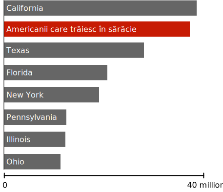

$1,000
$63,179 (Venitul median al unei familii în SUA)
1 milion $
1 miliard $
139 miliarde $ (bogăția lui Jeff Bezos)
Lol, glumeam, suntem cam la o treime. Continuați să derulați totuși, mai sunt multe de văzut.
Chiar și averile oamenilor foarte bogați sunt ascunse de bogăția de neînțeles a celor 0,0001%.
Este posibil ca acești oameni să se considere fabulos de bogați și de multe ori se opun politicilor care vizează reducerea inegalității.
Dar mulți nu au înțeles pe deplin enorma prăpastie dintre ei și cei super bogați.
Putem avea o lume în care există oameni înstăriți, fără a da aproape toți banii celor super bogați.
Niciun om nu are nevoie sau nu merită această bogăție.
Cei mai bogați 400 de americani cei mai bogați: 2,96 bilioane $
Un un bilion de dolari este o cifră atât de mare, încât la fel de bine s-ar putea spune „unsprezece gazilioane de dolari”. Asă că, în această secțiune, vom încerca să înțelegem amploarea acestei figuri, analizând ce s-ar putea realiza cu diverse bucăți ale acestei bogății.
Pe măsură ce continuăm, încercați să țineți cont: toată această bogăție este controlată de un grup atât de mic, încât ar putea să încapă într-un singur avion 747 - cu 260 de locuri rămase.

Ce am putea face cu 3% din acești bani?
Putem să testăm fiecare american de coronavirus
La momentul scrierii acestui text, testarea în Statele Unite nu depășește cu mult ceea ce este necesar pentru a redeschide economia. Conform unor estimări, acumularea suficientă a testelor la aproximativ 30 de milioane de teste pe săptămână ar costa în jur de 100 miliarde $ , sau aproximativ 3% din averea controlată în prezent de cei mai bogați 400 de americani.
Eradicarea permanentă a malariei
Malaria este una dintre cele mai grave boli infecțioase întâlnite vreodată de omenire, putând ucide mai multe persoane decât orice altă boală infecțioasă din istorie. Numai în secolul XX, malaria a ucis mai multe persoane decât Moartea Neagră.
Coronavirus ne-a arătat toate ororile de a trăi cu o boală mortală. Din păcate, pentru o mare parte a lumii, această groază a fost o caracteristică constantă a vieții de zi cu zi chiar înainte de coronavirus.
Toate aceste decese pot fi prevenite. Tratarea și prevenirea malariei este o știință bine înțeleasă, practicată universal în lumea dezvoltată.
Se estimează că malaria ar putea fi eradicată global până în 2030 pentru un cost în jur de 1,84 USD pe persoană cu risc pe an sau aproximativ 100 miliarde USD în total. Aceasta ar fi în jur de 3% din averea deținută în prezent de cei mai bogați americani.
Astăzi, aproximativ 800 de copii vor muri de malarie. Un grup mic de oameni super-bogați ar putea să-l oprească pentru o sumă de bani atât de mică încât probabil că niciodată nu ar observa absența acesteia. Dar aleg să nu o facă.
Ce am putea face cu 5% din acești bani?
Am putea oferi 1.200 $ fiecărei gospodării americane.
Stimul recent coronavirus a fost cel mai mare trecut vreodată de congres. Acesta a fost finanțat integral prin cheltuieli cu deficit, care vor fi rambursate de contribuabili pentru generații întregi. Sarcina rambursării acestei datorii ar putea fi ștersă într-o clipă cu o taxă asupra celor super bogați atât de mici încât nici nu ar simți asta.
Bogăția a 400 de americani ar fi putut finanța întregul act CARES, inclusiv salvarea corporațiilor, șomajul extins și testarea extinsă - rămânând aproape un un bilion de dolari.
În schimb, plătitorul de taxe americane va fi rămas cu factura.
Scoaterea fiecărui american din sărăcie.
Populația statelor americane în comparație cu sărăcia, 2019
Fiecare persoană din America ar putea fi ridicată deasupra pragului sărăciei cu o subvenție în numerar de aproximativ 10.000 USD pentru fiecare familie sărăcită (și aproximativ 7.000 USD pentru persoanele sărace). Costul total ar fi de 170 de miliarde de dolari, puțin peste 5% din averea controlată în prezent de 400 de persoane.
Poate părea contra intuitiv faptul că o subvenție o singură dată ar putea avea un impact de durată asupra sărăciei cronice. Dar unul dintre adevărurile surprinzătoare despre sărăcie este că este fluidă. Americanii se mută și ies din sărăcie de multe ori de-a lungul vieții, iar un an bun poate avea un efect masiv și de lungă durată.
O mulțime de date susține acum ideea că transferurile de numerar unice pot transforma permanent o economie locală. Primind un câștig brusc, oamenii investesc în viitorul lor. Ei se întorc la școală, obțin mijloace de transport, plătesc îngrijirea copiilor, achită datoriile și fac orice număr de lucruri pentru a-și îmbunătăți perspectivele de carieră și viitorul financiar.
În SUA, pentru toți oamenii care scapă de sărăcie într-un an dat, aproximativ jumătate scapă de sărăcie pentru cel puțin cinci ani . Aproximativ o treime scapă de sărăcie pentru zece ani.
Aceasta nu ar fi o soluție permanentă pentru toți americanii. Cu siguranță, unii s-ar întoarce repede la sărăcie, iar alții se confruntă cu datorii atât de mari încât subvenția nu ar face mare diferență. Dar pentru zeci de milioane de americani, acesta ar fi un eveniment care se schimbă viața. Ar fi un program social care definește generația care să modeleze economia pentru decenii următoare.
Ce am putea face cu 6% din acești bani?
Rambursarea impozitelor pe 2018 pentru toate gospodăriile care câștigă sub 80.000 $
În 2018, veniturile fiscale federale combinate în rândul tuturor gospodăriilor americane care câștigau sub 80.000 $ pe an era în jur de 200 miliarde $. Acești bani - luați în totalitate de la americanii săraci și de clasa mijlocie - ar putea fi restituiți pentru o mică parte din averea controlată de .0001%.
Ce am putea face cu 8% din acești bani?
Am putea oferi apă potabilă curată și toaletă acces oricărui om de pe pământ.
În jur de 844 milioane de oameni nu au acces la apă curată de niciun fel. Aproximativ același număr nu are acces la o toaletă sau latrină de niciun fel și, prin urmare, defechează în spațiul public.

Fără apă potabilă
Apa contaminată este o sursă majoră de boli, inclusiv holeră, dizenterie și febra tifoidă. Se estimează că apa contaminată ucide aproximativ 829.000 de oameni în fiecare an, ceea ce o face una dintre cei mai mari ucigași din lume. Costul pentru furnizarea de apă curată și deșeuri pentru toți cei de pe Pământ ar fi de aproximativ 240 miliarde de dolari , sau 8% din averea controlată de cei mai bogați 400 de americani.
Ce am putea face cu 40% din acești bani?
Am putea da 10.000 $ fiecărei gospodării americane
Pe măsură ce americanii dezbat cum și când să deschidă economia după coronavirus, li se prezintă frecvent o alegere aparent imposibilă între a risca milioane de vieți și a te strecura într-o mare depresie printr-o blocare continuă. Aceasta este o minciună respingătoare.
Banii pentru a stabiliza această furtună, menținând carantina, există doar o chestiune de a găsi voința politică de a o lua.